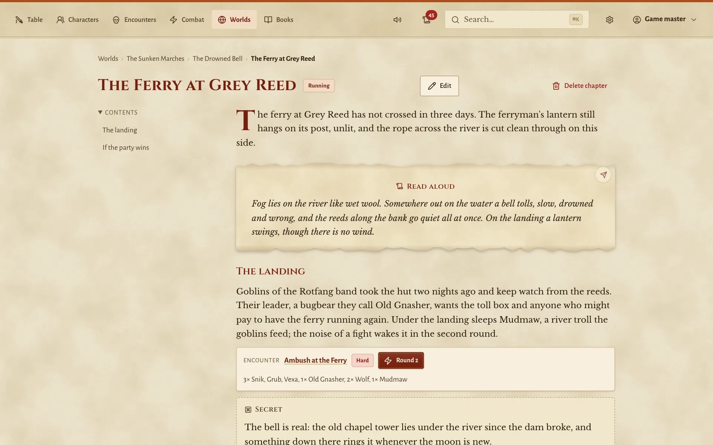
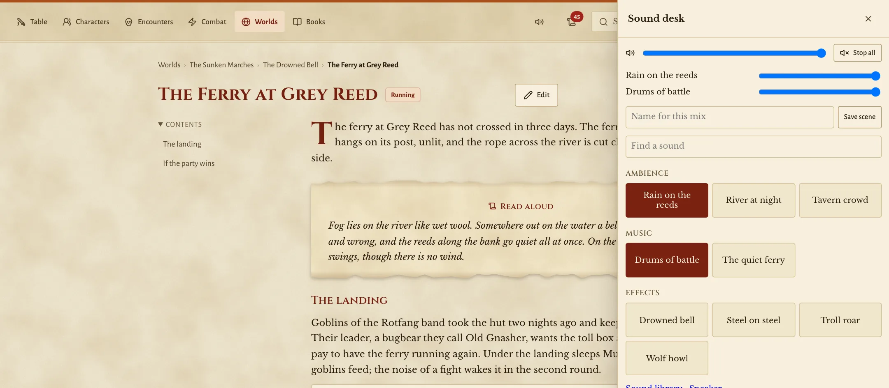
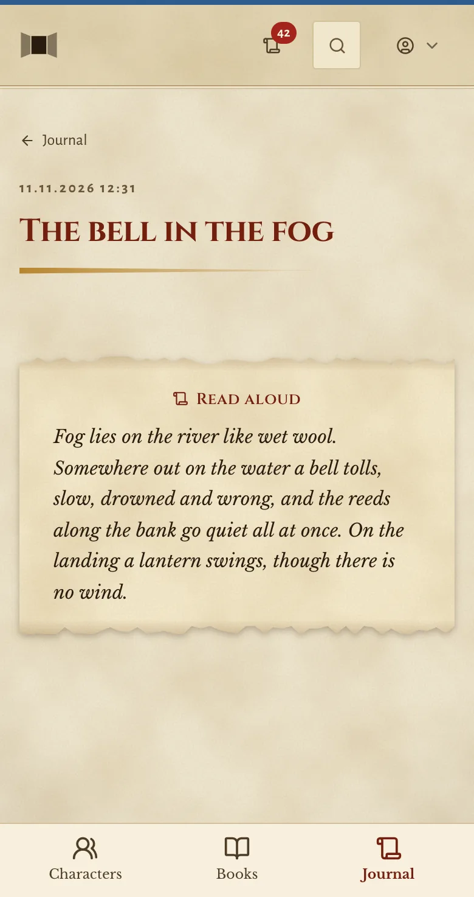
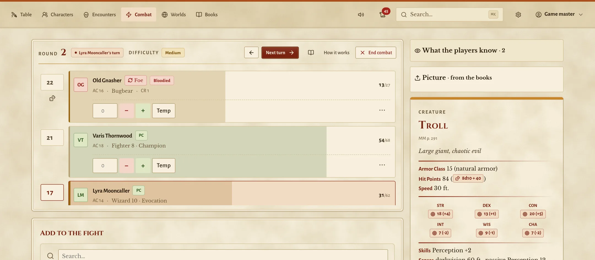
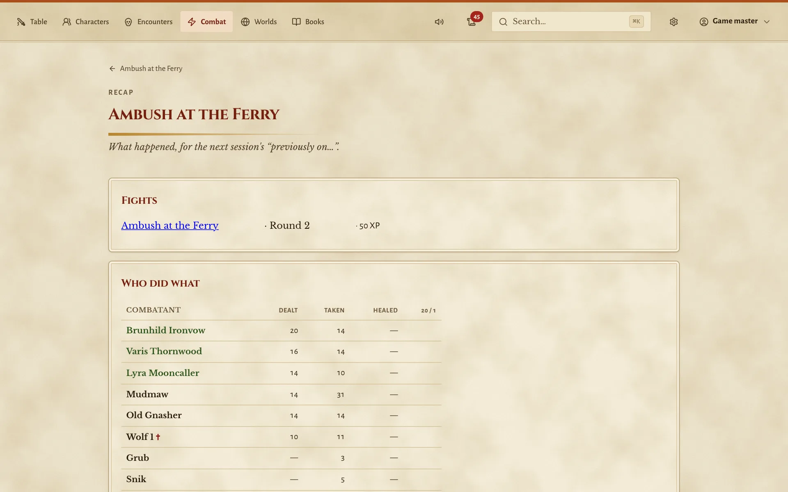
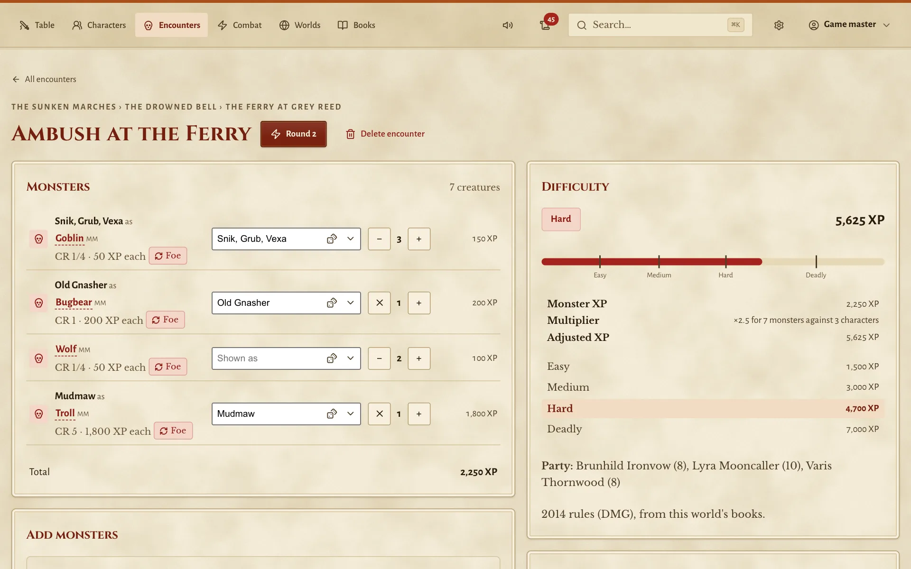
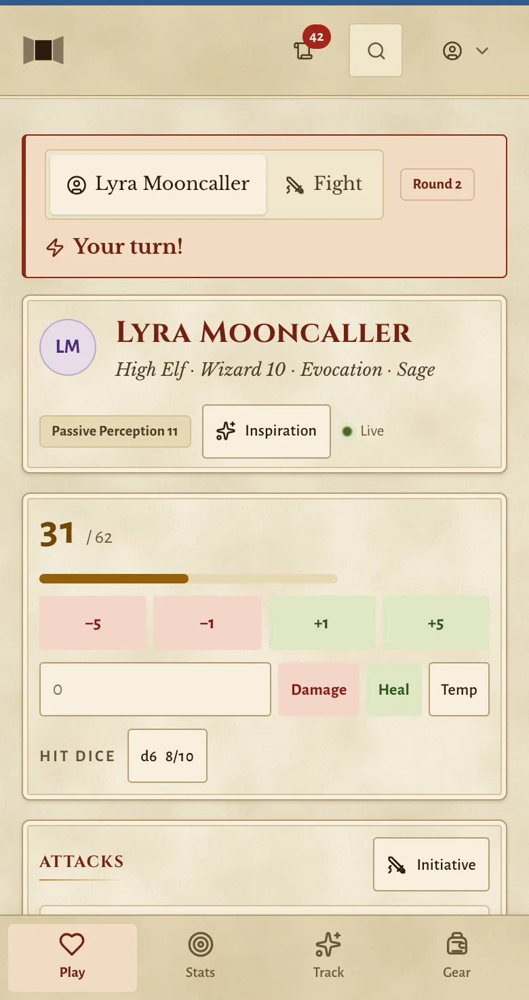
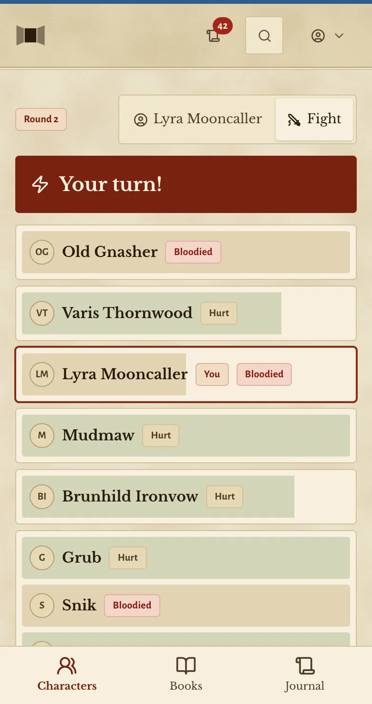
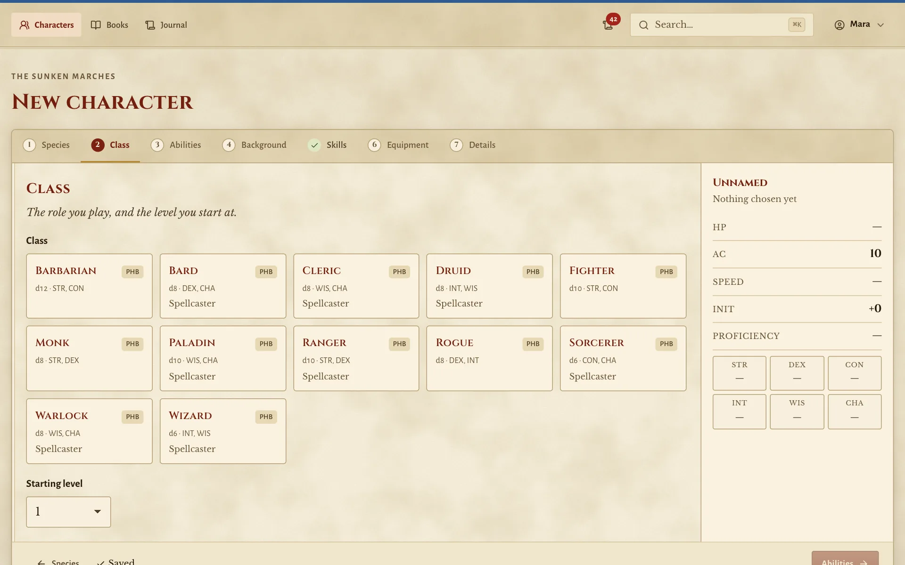
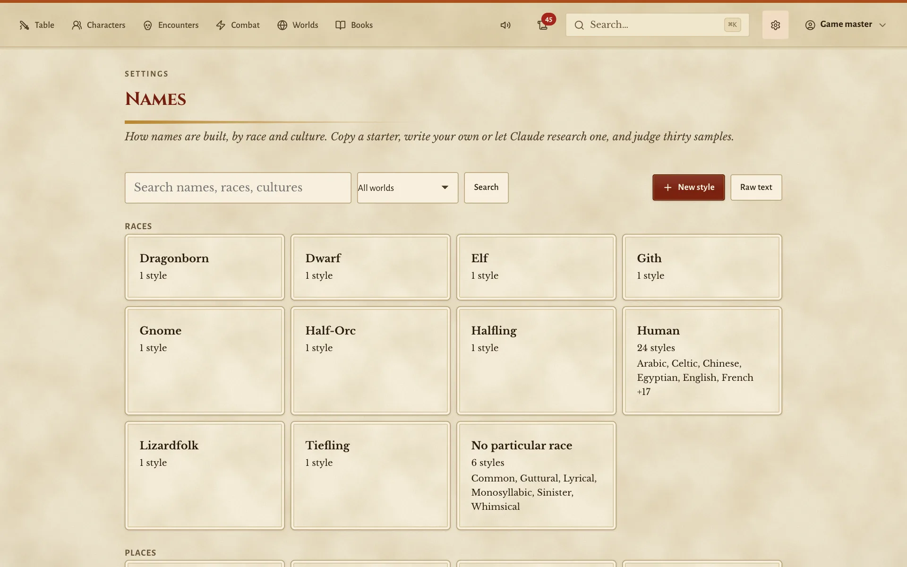

At the table, not instead of it
Big buttons, quick taps, no setup before the first session. Paravent sits beside the dice and the snacks and leaves the talking to you.
For Dungeons & Dragons 5e at a real table
A paravent is a folding screen, the one the game master sits behind. Paravent keeps your notes, the rules and the fight in order, so you can look up from the screen and back at your players. The dice, the voices and the story stay at the table where they belong.
Why it exists
It began with a weekly game and a game master who had run out of hands. A PDF here, three browser tabs there, hit points on a spreadsheet, initiative on a sticky note. The players wanted their characters on their phones, and nobody wanted another subscription.
Paravent is what came out of it. It does not play the game for you. It keeps track of the things that slow a session down, so the table can spend its evening on the story. You still describe the dragon, the players still argue about the plan, and the dice still decide.
It runs on a laptop, a mini PC or a NAS in your home. Nobody signs up anywhere and nothing goes to a cloud. Everything you write lives in plain files that you can open, copy and back up yourself.
Big buttons, quick taps, no setup before the first session. Paravent sits beside the dice and the snacks and leaves the talking to you.
Only your home network. The game master sees everything, players see what their characters would know. A DC never shows up on a phone.
The books you bring are searchable in one box. Hover over a spell in your notes and read it without losing your place.
Features
Some of it helps you prepare at the desk. Most of it is there for the moment the players do something you did not expect.
Initiative, hit points, conditions that count down by round, concentration checks, lair actions. Monster attacks are a button away, but whether they hit is your call, and nothing changes a hit point until you say so.
Initiative and saving throws are rolled on each player's phone and show up in your tracker a moment later. They hear their dice, see "Your turn!" and never see the DC.
Monster rolls reach the players as results only: hit, nine slashing. They never learn a foe's hit points or armor class, and they only read the books you allow.
Players can look at a creature and see what their characters see. What they find out in a fight is remembered, like the troll that shrugged off the fire. Next time they meet one, they know.
Build a fight and see how hard it is for the party you actually have, by the 2014 or the 2024 rules. Roll a random encounter for the road or a hoard for the lair.
A builder for both editions at any level, and a sheet that explains its numbers, so everyone can see where that 17 comes from. You grant levels when the story says so.
Write chapters the way you write notes. Obsidian works. NPCs, places, fights and treasure sit in the text as cards you can open mid session. You can also start from a published adventure and add your own ideas.
Pass a letter, a map or a description to the players who found it. They get their own copy on their phone, your secrets stay out of it, and you see who has read it.
Every roll lands in one log with its dice and bonuses. Afterwards you get a summary of the fight or the whole night, ready for next week's "previously on".
Rain, a crackling fire, the music for the boss. Start them from your tablet, play them on the speaker in the room, and let a chapter cue the tavern noise for you.
The players ask the innkeeper's name and you have one, in the style of the people and the world you play in. Goblins get goblin names, dwarven halls get dwarven ones.
If you like, Claude drafts an adventure for your group: chapters, characters and fights from your own books. It stays a draft until you read it and say yes. Asked to change an adventure or creature you already accepted, Claude writes a revision beside it, which changes nothing until you say yes to that too.
The whole interface speaks German, distances come in metres, and translated rules fall back to English where nobody has translated them yet.
A clean default, or Tome: parchment by day and leather by candlelight, set like the printed books. Each player can pick their own.
A game night
Paravent never sits in the middle of the table. This is where it helps on an ordinary evening, and what stays exactly as it always was.
The afternoon before
You write tonight's chapter in plain text: the ferry, the goblins in the reeds, the troll under the landing. Paravent checks your links, rates the ambush for the party you actually have and finds a name for the bugbear.
At the table: your ideas and notes, as loose as you like.

7 pm
The players open their characters on their phones. You read the box aloud, and with one tap on the sound desk the rain starts on the speaker by the shelf. No playlist to hunt for.
At the table: your voice, the snacks, the first jokes.

7:40 pm
The words about the drowned bell go to the players as a handout. They land in the journal on their phones and stay there, so nobody has to remember them word for word next month.
At the table: the players reading it out to each other.

8:15 pm
The tracker keeps the order, the hit points and who is concentrating, with the troll's statblock right beside it. The players roll on their phones, or with real dice and you type in the number. Whether a blow lands is always your call.
At the table: real dice, the map, the miniatures, the cheering.

Midnight
The recap shows who landed the big blow, who went down and what the fight was worth. Turn it into a note for the next session in a minute, then close the laptop.
At the table: the stories the players tell on the way home.

How it thinks
Paravent helps people play together in one room. It keeps the bookkeeping out of the way so the evening belongs to the story and the people around the table.
Did the arrow hit? Who stood in the fire? Is it time to level up? Paravent offers the numbers and a button. The decision stays with you.
At the start of a turn it reminds you of the recharge roll and the lair action. It shows a resistance instead of quietly halving the damage. Nothing happens behind your back.
Two thirds of all spell names exist in more than one book. Pick yours, the 2014 handbook or the 2024 one, and every reference finds the right version. A book nobody owns stays out of play and says so.
The rules you bring are only ever read. Everything you create is kept separately. Swap the books for a new release and your campaign is untouched.
The file remembers what the player picked. Armor class and hit points are worked out fresh every time, so a corrected rule fixes every sheet at once.
German text never touches the rules underneath. A half translated book is perfectly normal, and removing a translation is always safe.
Whatever Claude writes is a draft. It appears nowhere in your game until you have read it and accepted it.
Screens
From the game master's tablet and a player's phone, in light and dark. Click a picture to see it larger.





The screenshots show creatures from the System Reference Document 5.1 by Wizards of the Coast LLC, under the Creative Commons Attribution 4.0 licence.
Under the hood
No database server, no cloud, nothing to compile. A small Python server and plain files on a disk, the kind of setup that still runs in ten years.
What's new
The latest changes as they were made. Updated 12 Nov 2026 .
Questions
Short answers, before you set anything up.
No, and it never will. You tell the story, the players roll the dice they like and you decide what happens. Paravent keeps the numbers, notes and handouts in order, so you can look up from the screen more often.
One machine that stays on while you play: a laptop, a mini PC or a NAS, with Python or Docker. Everyone else only needs a browser on the same network, on a phone, tablet or laptop. Nothing to install from an app store.
Paravent ships no game content at all. It reads rules data in the 5eTools format from a folder on your own machine and never changes it. Which data you put there is your decision, the same as which books stand on your shelf.
On your machine, in one folder: worlds, adventures, characters, fights, all as readable Markdown and JSON files. There is no account with us, no cloud and no tracking. Paravent zips that folder every night if you let it.
Only your own network. The phones talk to the machine running Paravent, nothing goes out to the internet. It does need that connection, though: there is no offline mode.
A simple login that you create for each of them. They see their own characters, the fight from their side and what you share with them, never your notes or a monster's hit points.
Both. Each world declares the books it uses, and that decides the edition. A table that owns both can mix them, and Paravent always shows which printing a rule came from.
Yes. The whole interface speaks German, distances come in metres, and rules texts can be translated passage by passage. Whatever nobody has translated yet stays in English, and every link keeps working.
Nothing. Paravent is free and open source. The only part that can cost money is optional: Claude features use your own Claude account or API key, paid to Anthropic. Without them, Paravent simply leaves those features off.
Yes. Paravent is released under the MIT License: use it, change it and pass it on, as long as the copyright notice stays with it. The source code is on GitHub. The licence covers the program, not the rules data you bring.
Yes. Adventures are plain Markdown, written in Paravent or in any editor, Obsidian included. Your own creatures come from the creature builder, and homebrew in the 5eTools format sits next to the books and works like them.
Legal
Paravent comes without any game content. No spells, no monsters, no rules text, no adventures. Which data a group uses is up to whoever runs it, just like a word processor and the books on your shelf.
Paravent is an independent open-source project and free to use. It is not affiliated with, endorsed or sponsored by Wizards of the Coast or the 5eTools project. Dungeons & Dragons and D&D are trademarks of Wizards of the Coast LLC. All other names belong to their owners.
This site sets no cookies and uses no tracking, analytics or outside fonts. Imprint and privacy policy.